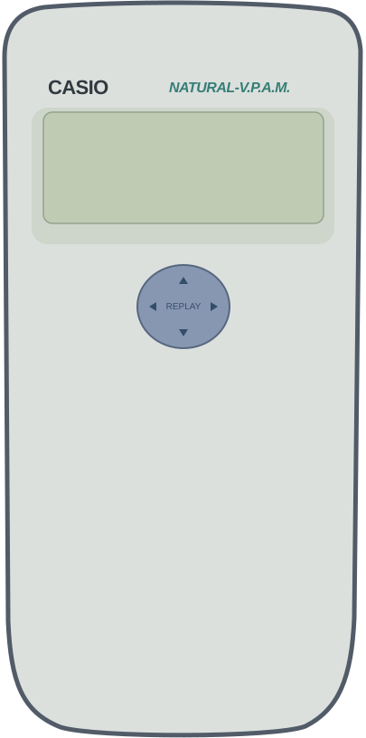

Casio fx-991ES PLUS C virtual calculator

Engine details
Loading C engine…
Each click is one bounded press and release.
Actual C call trace
Device observation
The LCD uses the C engine's pixels. Semantic timer acceleration is enabled; physical timing is not emulated.
Source code